Deck 11 of 12 · FRC Java crash course
Set it up, draw an auto, attach commands, and run it
WPILib 2026 · Java · Command-based
Overview
PathPlanner is two pieces: an app where you draw autos, and a library that runs them on the robot.
Installing both, and the settings a tank drive needs.
Drawing paths, and building them into an auto.
Attaching commands to paths, four different ways.
The robot code, and a test in the simulator.
Deck 11 · PathPlanner
2
How it fits together
Schematic. The files travel to the roboRIO when you deploy, like the rest of src/main/deploy.
saves
reads
PathPlanner app
on your laptop: draw paths and autos
deploy/pathplanner/
settings.json, paths/*.path, autos/*.auto
PathPlannerLib
on the robot: builds and follows each auto
Your robot code
configures it and registers command names
Deck 11 · PathPlanner
3
What you need first
| Method | What it does | Needs |
|---|---|---|
| getPose() | Where the robot thinks it is on the field | Encoders, a gyro, odometry |
| resetPose(pose) | Tells odometry where the robot is | Odometry |
| getSpeeds() | How fast the robot is moving, robot-relative | Encoders |
| driveSpeeds(speeds) | Drives at a forward speed and turn rate | Wheel speed control |
Deck 10’s CANDriveSubsystem has all four. This deck reuses it. A stock KitBot has no encoders or gyro.
Deck 11 · PathPlanner
4
Install
1
Install the PathPlanner app
From the Microsoft Store for automatic updates, or from the GitHub releases page.
2
Open WPILib VS Code
Open your robot project.
3
Add PathPlannerLib
WPILib logo in the activity bar, then find PathplannerLib under Available Dependencies and click Install.
4
Build once
Run WPILib: Build Robot Code to prove the library is in.
PathPlannerLib install
Deck 11 · PathPlanner
5
Install
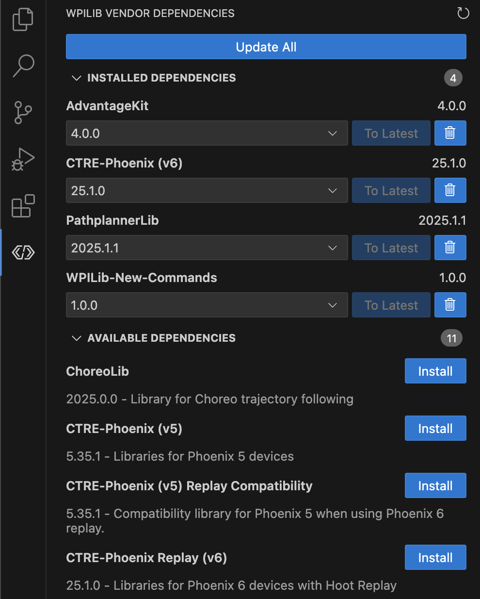
Image: PathPlanner docs, MIT license. The versions shown are from 2025.
Installed Dependencies
PathplannerLib appears here once it is installed.
Available Dependencies
Install it from this list the first time.
Update All
Moves every library to its newest version for the season.
Deck 11 · PathPlanner
PathPlanner docs: PathPlannerLib: Getting Started
6
The app
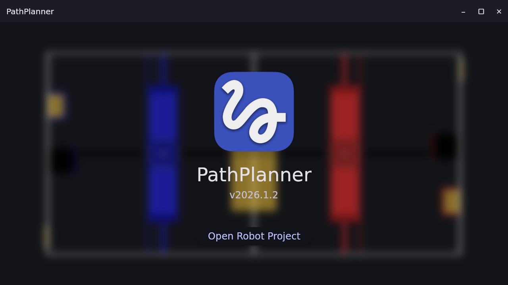
Screenshot: PathPlanner 2026.1.2, with this deck’s KitBot settings.
Open Robot Project
Pick the folder that holds build.gradle.
Where files go
The app creates src/main/deploy/pathplanner inside that folder.
The 2026 field
If it offers the 2026 field image, choose Yes.
Deck 11 · PathPlanner
PathPlanner docs: Getting Started
7
Settings, part 1
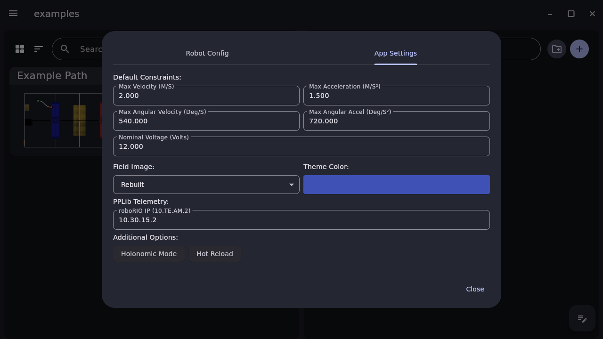
Screenshot: PathPlanner 2026.1.2, with this deck’s KitBot settings.
Holonomic Mode off
A tank drive cannot move sideways. Leave it on only for swerve.
Default constraints
2 m/s and 1.5 m/s² for new paths: slow on purpose.
Field image
Rebuilt is the 2026 field.
Hot Reload
Keep it off at events.
Deck 11 · PathPlanner
PathPlanner docs: Settings
8
Settings, part 2
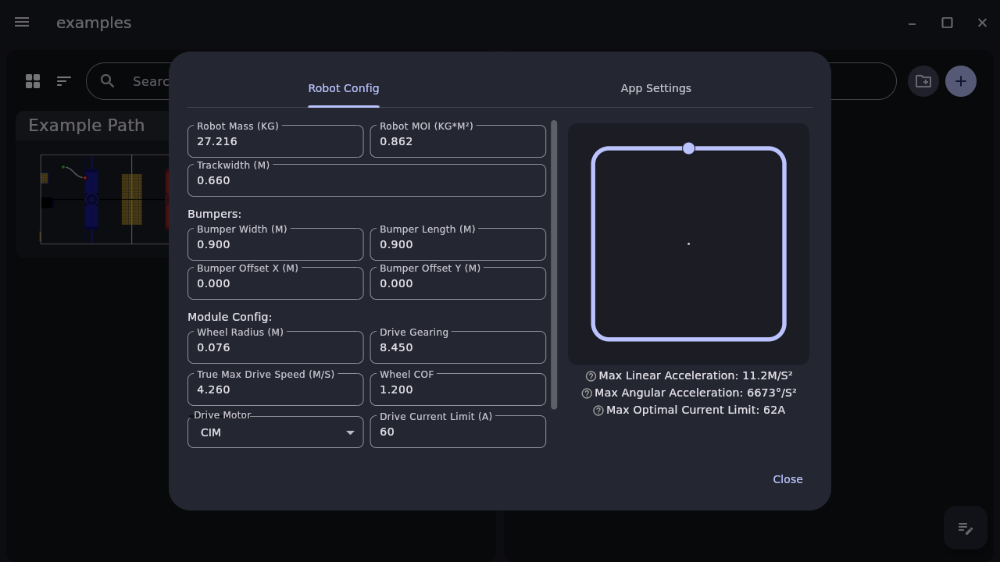
Screenshot: PathPlanner 2026.1.2, with this deck’s KitBot settings.
Mass: 27.216 kg, which is 60 lb
MOI: 0.862 kg·m², WPILib’s KitBot estimate
Trackwidth: 0.66 m, which is 26 in
Wheels: 0.0762 m radius, 8.45:1
True max speed: 4.26 m/s, 85% of free speed
Motor: CIM, 60 A limit
Bumpers: for the drawing only
Deck 11 · PathPlanner
PathPlanner docs: Robot Config
9
Control theory
1
Grip: 160 N per side
Wheel friction × weight on that side: 1.2 × 27.216 kg × 9.8 ÷ 2.
2
Motors: 152 N per side
Two CIMs at 60 A give 18.5 N·m at the wheel. 6.9 N·m goes to friction, judged from true max speed. Divide by the wheel radius.
3
The smaller one wins: 152 N
Two sides push 304 N on 27.216 kg: 11.2 m/s².
4
Slip above 62 A
The app’s Max Optimal Current Limit: past it, the wheels slip instead of pushing harder.
Deck 11 · PathPlanner
10
The app
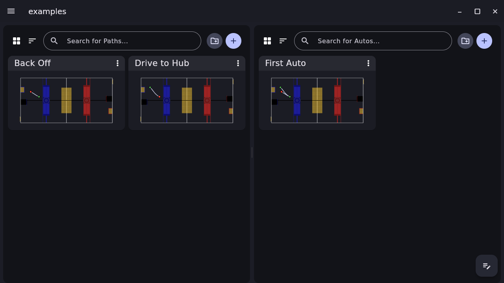
Screenshot: PathPlanner 2026.1.2, with this deck’s KitBot settings.
Path
One continuous motion from a start to an end.
Auto
A whole routine: paths and commands in order.
The + buttons
Make a new path or auto. Click a name to rename it.
The ⋮ menu
Duplicate or delete.
Deck 11 · PathPlanner
PathPlanner docs: Project Browser
11
Drawing a path
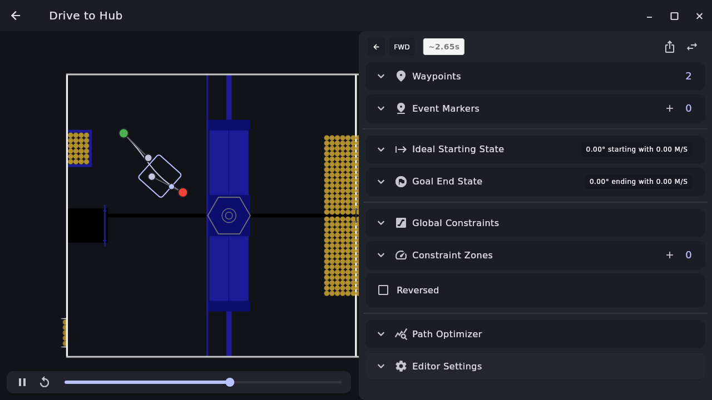
Screenshot: PathPlanner 2026.1.2, with this deck’s KitBot settings.
Waypoints
Green is the start, red the end. Double-click the field to add one.
Heading
The direction of travel through a point.
Control points
The grey dots. Drag them to bend the curve.
Time estimate
About 2.65 s with these limits.
Deck 11 · PathPlanner
PathPlanner docs: Editing Paths and Autos
12
Drawing a path
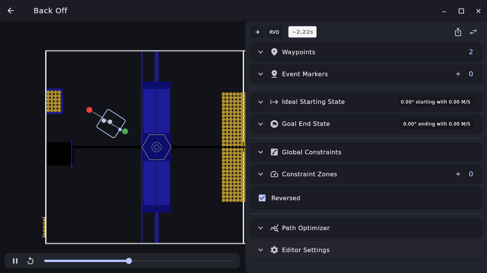
Screenshot: PathPlanner 2026.1.2, with this deck’s KitBot settings.
Starts where the last path ended
3.3 m by 4.7 m, so the robot needs no jump.
Reversed
Tick it to drive backward. The panel then shows RVD.
Tank only
Reversed appears with Holonomic Mode off.
Deck 11 · PathPlanner
13
Part 1
Four ways to make the robot do something along the way
Deck 11 · PathPlanner
14
Commands and paths
| Where | When it runs | Set up in | In this deck |
|---|---|---|---|
| Named command in an auto | Between paths. The next step waits for it. | The app | launch |
| Event marker with a command | At a point on a path, while it keeps driving | The app | spinUp |
| Event trigger | When the robot passes a marker by name | Java | EventTrigger |
| Java composition | Anywhere, with Deck 2’s andThen and friends | Java | firstAutoInCode |
All four end up as ordinary WPILib commands, from the same factory methods.
Deck 11 · PathPlanner
15
Commands and paths
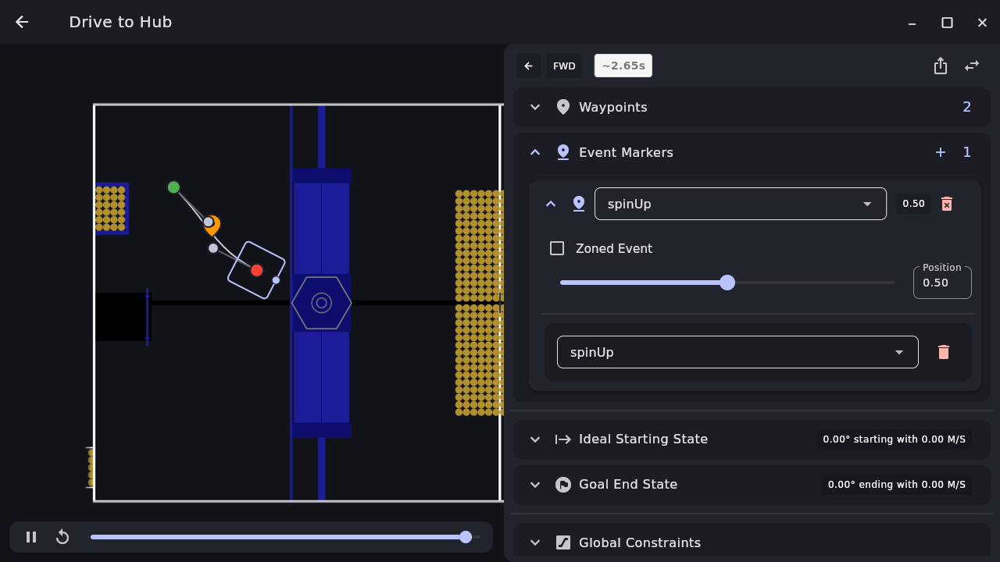
Screenshot: PathPlanner 2026.1.2, with this deck’s KitBot settings.
Marker name
spinUp: also the name an event trigger would use.
Position 0.50
Halfway between waypoint 0 and waypoint 1.
The + button
Named Command, then type spinUp and press Enter.
Zoned Event
A start and an end position instead of one point.
Deck 11 · PathPlanner
PathPlanner docs: Editing Paths and Autos
16
Building an auto
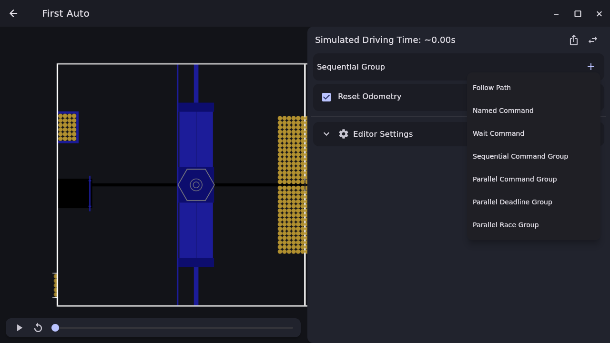
Screenshot: PathPlanner 2026.1.2, with this deck’s KitBot settings.
Follow Path
Drive one of your paths.
Named Command
Run a command your code registered.
Wait Command
Pause for a set time.
Groups
Sequential, parallel, deadline and race, as in Deck 2.
Deck 11 · PathPlanner
17
Building an auto
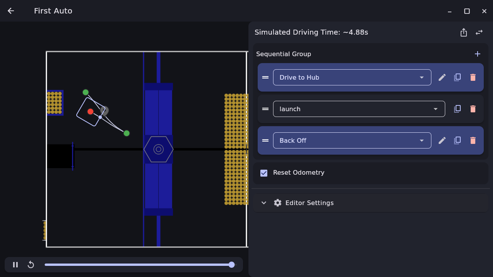
Screenshot: PathPlanner 2026.1.2, with this deck’s KitBot settings.
Drive to Hub
Its spinUp marker fires on the way.
launch
A named command. Back Off waits for it.
Back Off
Reversed, away from the hub.
Reset Odometry
Ticked: the robot starts at the first path’s start.
Deck 11 · PathPlanner
18
Building an auto
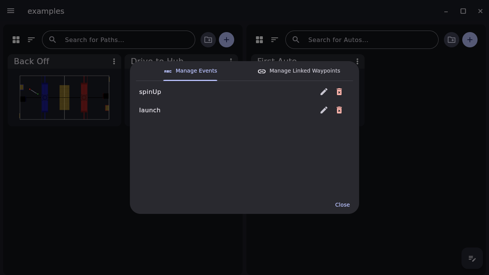
Screenshot: PathPlanner 2026.1.2, with this deck’s KitBot settings.
Manage Events
The button at the bottom right of the project browser.
spinUp and launch
Every command name used in any path or auto.
Rename here
Changes the name everywhere it is used.
Deck 11 · PathPlanner
19
Part 2
Deck 10’s drivetrain, plus a stand-in launcher
Deck 11 · PathPlanner
20
The commands
Launcher.java
/** Starts the flywheel, then ends at once. The flywheel keeps spinning. */
public Command spinUp() {
return runOnce(() -> flywheel.set(FLYWHEEL_SPEED)).withName("Spin up");
}
/** Feeds for LAUNCH_SECONDS, then stops both motors. */
public Command launch() {
return run(() -> feeder.set(FEED_SPEED))
.withTimeout(LAUNCH_SECONDS)
.finallyDo(this::stop)
.withName("Launch");
}
Ordinary factories from Deck 2. PathPlanner only decides when they run.
Deck 11 · PathPlanner
21
PathPlannerLib
PathPlannerSetup.java
RobotConfig config;
try {
config = RobotConfig.fromGUISettings(); // deploy/pathplanner/settings.json
} catch (Exception e) {
DriverStation.reportError("PathPlanner settings: " + e.getMessage(), false);
return false;
}
fromGUISettings() reads deploy/pathplanner/settings.json: the numbers from the Robot Config slide.
Deck 11 · PathPlanner
22
PathPlannerLib
PathPlannerSetup.java
AutoBuilder.configure(
1 drive::getPose, // where odometry thinks we are
1 drive::resetPose, // used by Reset Odometry
1 drive::getSpeeds, // robot-relative speeds
1 (speeds, feedforwards) -> drive.driveSpeeds(speeds),
2 new PPLTVController(0.02), // tank follower, 20 ms loop
config,
3 PathPlannerSetup::isRedAlliance, // true: mirror for red
drive);
1
The four methods
From the needs slide.
2
The tank follower
PPLTVController, run every 20 ms.
3
Draw on blue
True on red: paths are mirrored.
Deck 11 · PathPlanner
23
RobotContainer
RobotContainer.java
// 1. Tell PathPlannerLib how to drive this robot.
boolean ready = PathPlannerSetup.configure(drive);
// 2. Register every name used in the app, before any auto is built.
NamedCommands.registerCommand("spinUp", launcher.spinUp());
NamedCommands.registerCommand("launch", launcher.launch());
// 3. One chooser entry per .auto file in deploy/pathplanner/autos, plus "None".
autoChooser = ready ? AutoBuilder.buildAutoChooser() : new SendableChooser<>();
if (!ready) {
autoChooser.setDefaultOption("None", Commands.none());
}
SmartDashboard.putData("Auto Chooser", autoChooser);
getAutonomousCommand() returns autoChooser.getSelected().
Deck 11 · PathPlanner
24
Common mistake
What you see
Drive to Hub and Back Off run, the launcher never moves, and the Driver Station shows a PathPlanner warning.
Why it happens
registerCommand ran after buildAutoChooser(), or the spelling differs from the app.
The fix
Register every name first, spelled exactly as in Manage Events.
PathPlanner attempted to create a command 'launch' that has not
been registered with NamedCommands.registerCommand
Deck 11 · PathPlanner
25
Commands and paths
PathPlannerSetup.java
/** First Auto, written in Java: the same two paths and the same launch. */
public static Command firstAutoInCode(Launcher launcher) {
try {
PathPlannerPath toHub = PathPlannerPath.fromPathFile("Drive to Hub");
PathPlannerPath backOff = PathPlannerPath.fromPathFile("Back Off");
return Commands.sequence(
AutoBuilder.resetOdom(toHub.getStartingDifferentialPose()),
AutoBuilder.followPath(toHub), // its spinUp marker still fires
launcher.launch(),
AutoBuilder.followPath(backOff));
} catch (Exception e) {
DriverStation.reportError("Path file: " + e.getMessage(), false);
return Commands.none();
}
}
Deck 11 · PathPlanner
26
Best practice
Pick clear names once. Rename only in the app, then fix the Java in the same commit.
The code loads paths by file name and commands by name. A rename on one side breaks the other without a build error.
Deck 11 · PathPlanner
27
Testing
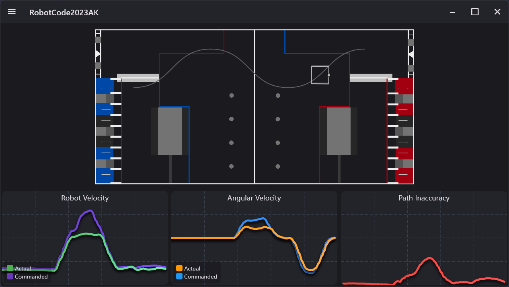
Image: PathPlanner docs, MIT license. An older season’s field.
Field preview
The path, the target pose in grey and the real pose in white.
Velocity graphs
Commanded and actual, straight and turning.
Path inaccuracy
How far the robot is from the target, 0 to 1 m.
Simulator or Robot
A switch on the page. Simulator connects to 127.0.0.1.
Deck 11 · PathPlanner
PathPlanner docs: Telemetry
28
Exercise
1.
In a copy of examples, set includeDesktopSupport to true. Make Robot.java create frc.robot.deck11.RobotContainer.
2.
Run WPILib: Simulate Robot Code. In PathPlanner, open Telemetry and choose Simulator.
3.
In Elastic, set Auto Chooser to First Auto. In the Sim GUI, click Autonomous.
4.
In the app, give Drive to Hub its own max acceleration of 1.0 m/s². Restart the simulation and run it again.
Done when: the robot drives to the hub and backs off, with no PathPlanner warnings, and the second run takes longer.
Deck 11 · PathPlanner
29
Recap
The app saves files into deploy/pathplanner, and PathPlannerLib runs them.
Tank drive: Holonomic Mode off, real robot numbers, slow default limits.
Paths are pieces of motion. An auto strings paths and commands together.
Commands join paths four ways: auto steps, markers, event triggers and Java.
Register every name before building autos, spelled exactly as in the app.
Next: Deck 12 covers vision, which corrects the pose every path depends on.
Deck 11 · PathPlanner
30
Reference
PathPlanner app
Robot config
Build an auto
Named commands
Deck 11 · PathPlanner
31